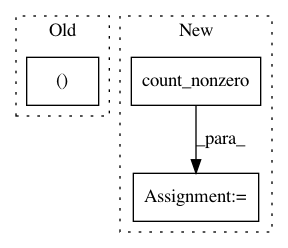

b60e3ad9b7c9ca78caee795618a6d87e4ca6c6c3,test/test_nearmiss.py,,,#,7
Before Change
plt.figure()
plt.scatter(ncrx[ncry==0, 0], ncrx[ncry==0, 1])
plt.scatter(ncrx[ncry==1, 0], ncrx[ncry==1, 1], color="r")
plt.show()
After Change
n_features=20, n_clusters_per_class=1,\
n_samples=5000, random_state=10)
r = float(np.count_nonzero(y == 1)) / float(np.count_nonzero(y == 0))
// // Try NearMiss algorithm
// NM1 = NearMiss(random_state=1, version=1, metric="l1")
// nm1x, nm1y = NM1.fit_transform(x, y)
In pattern: SUPERPATTERN
Frequency: 3
Non-data size: 3
Instances
Project Name: scikit-learn-contrib/imbalanced-learn
Commit Name: b60e3ad9b7c9ca78caee795618a6d87e4ca6c6c3
Time: 2015-05-26
Author: glemaitre@visor.udg.edu
File Name: test/test_nearmiss.py
Class Name:
Method Name:
Project Name: reinforceio/tensorforce
Commit Name: af2bcf3e70928d379feaf46cdae1aeba71d0e424
Time: 2017-11-26
Author: aok25@cl.cam.ac.uk
File Name: tensorforce/models/model.py
Class Name: Model
Method Name: create_output_operations
Project Name: RaRe-Technologies/gensim
Commit Name: 11eb5df876a007566dfc98c0132ef5ef04675959
Time: 2019-07-07
Author: witiko@gmail.com
File Name: gensim/matutils.py
Class Name:
Method Name: unitvec